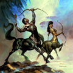

Кентаври, в грецькій міфології дикі істоти, напівлюди-полукони, мешканці гір і лісових хащ. Вони народжені від Иксиона, сина Ареса, і хмари, що прийняла з волі Зевса вигляд Гери, на яку зазіхав Иксион. Жили вони в Фессалії, харчувалися м'ясом, пиячили і славилися буйною вдачею. Кентаври невтомно боролися зі своїми сусідами лапифами, намагаючись викрасти для себе дружин з цього племені. Переможені Гераклом, вони розселилися по всій Греції.
Кентаври смертні, безсмертний був тільки Хірон, син Філіри, дочки Океану, і титану Кроноса, потай від Рета поєднувалися шлюбом. Захоплений до момент пристрасті дружиною Реєю, Кронос прийняв вигляд коня, і Хірон народився з тілом і ногами коня, але з людською головою і руками. Незвичайне походження пояснює мудрість Хирона, який, на відміну від всіх кентаврів, був обізнаний у музиці, медицині, полюванні і військове мистецтво, а також славився своєю добротою. Він дружив з Аполлоном і виховав ряд грецьких героїв, в числі яких були Ахілл, Геракл, Тесей і Ясон, навчав лікуванню самого Асклепія. Хірон був випадково поранений Гераклом стрілою, отруєної отрутою лернейской гідри. Страждаючи від невиліковної ропи, кентавр жадав смерті і відмовився від безсмертя в обмін на звільнення Зевсом Прометея. Зевс поселив Хирона на небі у вигляді сузір'я Кентавра.
Кентавр - саме гармонійне створення фантастичною зоології. "Двуформним" названий він в Овідіева "Метаморфозах", однак нам неважко забути про його гетерогенну природу і думати, що в Платоновому світі форм, поряд з архетипом коня або людини, є архетип кентавра. Відкриття цього архетипу зажадало багатьох століть; первісні і архаїчні зображення представляють нам голого людини, до якого незграбно прикріплений кінський зад. На західному фронтоні храму Зевса в Олімпії у кентаврів уже кінські ноги, а там, де повинна починатися шия коня, височіє людський торс. Кентаврів породили фессалийский цар Иксион і хмара, якому Зевс надав вигляд Гери; інша легенда свідчить, що вони - діти Аполлона. (Є припущення, що слово "кентавр" походить від "гандхарва"; в ведичної міфології "гандхарви" - молодші боги, правлячі кіньми Сонця.)
Так як греки гомерівської епохи не їздили верхи, передбачається, що перший кочівник, якого вони побачили, здався їм чимось єдиним з його конем; і на доказ наводять те, що солдати Пісарро і Ернана Кортеса також представлялися індіанцям кентаврами. "Один з тих вершників впав з коня, і коли індіанці, впевнені, що це одне ціле, побачили, що ця тварина розділилося на дві частини, страх їх був такий великий, що вони з криками побігли назад, до своїх, кричачи, що з одного стало двоє, і шокуючи всіх у жах, і було в цьому якесь таємне диво, бо, якби не було такого випадку, можна вважати, що вони перебили б усіх християн ", - говорить один з текстів, що приводяться Прескотт. Але грекам, на відміну від індіанців, кінь була відома; більш правдоподібно припущення, що кентавр - це нарочито створений образ, а не плід помилки через незнання.
Найпопулярніша з легенд, де фігурують кентаври, - легенда про битву з запросили їх на весілля лапифами. Для гостей вино було в новинку - на бенкеті захмелілий кентавр образив наречену і, перекидаючи столи, затіяв знамениту "кентавромахії", яку Фідій або його учень зобразив в Парфеноні, Овідій оспівав в книзі XII "Метаморфоз" і яка надихнула Рубенса. Переможені лапифами, кентаври були змушені тікати з Фессалії. В іншому битві Геркулес, стріляючи з лука, знищив їх.
Кентавр - втілення сільської дикості і гневливости, але "найсправедливіший із кентаврів" - Хірон ("Іліада", XI, 832) був наставником Ахіллеса і Ескулапа, яких навчив мистецтвам музики, собаківництва, ратній справі і навіть медицині і хірургії. Запам'ятовується образ Хірона в пісні XII "Ада", яку, за спільною згодою, прийнято називати піснею кентавра. На цей предмет є тонкі спостереження у Момільяно в його виданні 1945 року. Пліній говорить, що бачив гіпокентавра, законсервованого в меду і присланого з Єгипту в дарунок імператорові.
В "Вечері семи мудреців" Плутарх гумористично повідомляє, що один з Пастухов коринфського деспота Периандра приніс йому в шкіряній сумці новонародженого дитинчати кобили, у якого особа, голова і руки були людські, а все інше - кінське. Плакав він, як дитина, і все вирішили, що це зловісне знамення. Мудрець Фалес, оглянувши його, розсміявся і сказав Періандр, що й справді не може схвалити поведінку його Пастухов. У п'ятій книзі своєї поеми Лукреций стверджує, що існування кентаврів неймовірно, бо коні досягають зрілості раніше, ніж люди, і кентавр в три роки був би дорослим конем і разом з тим незрозумілими немовлям. Такий кінь умер би на п'ятдесят років раніше, ніж людина.
Хорхе Луїс Борхес "Книга Вигаданих істот".